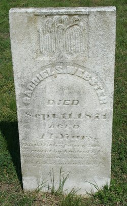

Gabriel Snead Webster
1822–1871
Life Events
Born: 1822
Died: September 11, 1871
Family
Father: John Gabriel Webster III
Mother: Leah White
Spouse:
Children
Military Service
No military service information has been added.
Biography
Gabriel Snead Webster was born in approximately 1822 in Maryland. On June 27, 1849, he married Mary A. Jones, identified in family research as Mary Adeline Jones, in Somerset County, Maryland. Their marriage is documented in the county marriage register. Following Mary's reported death in 1863, Gabriel married Susan A. Windsor on December 20, 1865.
In August 1863, Gabriel S. Webster appeared in the United States Civil War draft registration for Tangier District, Somerset County, Maryland. He was recorded as a 38-year-old boatman born in Maryland. His inclusion establishes that he was registered as subject to military duty but does not establish that he served in the Union Army. The age recorded in this document suggests a birth around 1824–1825, somewhat later than the 1822 birth year currently associated with him.
Gabriel S. Webster and Susan A. Windsor married on December 20, 1865, according to their marriage record.
Gabriel and Susan were the parents of Anna Elizabeth Webster Todd (1868–1940) and William Gabriel Snead Webster (1871–1939). Anna's 1940 Maryland death certificate identifies her father as Snead Webster and her mother as Susie Windsor.
Tragedy struck the Webster family in September 1871 when Gabriel Snead Webster and two of his sons died of typhoid fever within five days. A contemporary newspaper reported that a younger son died on Thursday, September 7, followed by Gabriel and his son Snead on Monday, September 11. Gabriel and Snead died within hours of each other. Family research identifies the two sons as Elmer Webster (1860–1871) and Newton Snead Webster (1855–1871), respectively. The newspaper describes the family as residents of Deal's Island, Somerset County, Maryland.
Photos
No additional photographs have been added.
Grave & Burial

Sources
-
1849 Marriage Record – Gabriel S. Webster and Mary A. Jones
Type: marriageSomerset County, Maryland, marriage register recording the marriage of Gabriel S. Webster and Mary A. Jones on June 27, 1849. The entry appears near the bottom of the right-hand page. The register identifies the bride as Mary A. Jones; her middle name Adeline is supplied by family research and is not spelled out in this record.
Location: Somerset County, Maryland
Supports: Gabriel S. Webster married Mary A. Jones on June 27, 1849., The marriage was recorded in Somerset County, Maryland., The bride's name was recorded as Mary A. Jones.
-
1850 U.S. Census – Leah and Snead Webster Household
Type: census1850 United States Federal Census, Dames Quarter District, Somerset County, Maryland, page 450, dwelling 539, family 539, enumerated October 8, 1850. The household includes Leah Webster (65), Snead Webster (23), Adaline Webster (20), Elizabeth Gibson (17), Mary M. Webster (2), Margaret Webster (25), and Susan Webster (2). Snead was recorded as a farmer with real estate valued at $300. All household members were recorded as born in Maryland. The census does not identify relationships between household members. Leah's recorded age suggests a birth around 1784–1785, differing from the provisional 1776 birth year on her profile.
Location: Dames Quarter District, Somerset County, Maryland
Supports: Leah Webster, age 65, lived in Dames Quarter District, Somerset County, Maryland, in 1850., Snead Webster, age 23, lived in the same household., Adaline Webster, age 20, lived in the same household., Snead Webster was recorded as a farmer with real estate valued at $300., The census does not establish the relationships among household members.
-
1863 Civil War Draft Registration – Gabriel S. Webster
Type: militaryUnited States Civil War Draft Registration Records, 1863–1865. Consolidated List of Class II men subject to military duty in the First Congressional District of Maryland, covering Somerset and Worcester Counties. The entry for Gabriel S. Webster appears on line 11 under Tangier District. He was recorded as a 38-year-old white boatman born in Maryland. The register is dated August 31, 1863. His recorded age suggests a birth around 1824–1825, differing from the currently recorded birth year of 1822. Registration does not establish that he served in the military.
Location: Tangier District, Somerset County, Maryland
Supports: Gabriel S. Webster was recorded in Tangier District, Somerset County, Maryland, in 1863., His occupation was boatman., His birthplace was Maryland., His age was recorded as 38., He appeared on the Civil War draft registration list dated August 31, 1863.
-
1865 Marriage Register – Gabriel S. Webster and Susan A. Windsor
Type: marriage_recordSomerset County, Maryland, marriage register recording the marriage of Gabriel S. Webster and Susan A. Windsor on December 20, 1865. The entry appears immediately below the December 20 marriage entry on a page containing marriages from 1865 and 1866. The original register identifies the couple by name and records their marriage date.
Location: Somerset County, Maryland, United States
Supports: Gabriel S. Webster and Susan A. Windsor were married on December 21, 1865., Their marriage was recorded in Somerset County, Maryland., Gabriel S. Webster was Susan A. Windsor's husband.
-
1871 Newspaper Report – Typhoid Deaths in the Snead Webster Family
Type: newspaperNewspaper clipping under the heading 'SOMERSET,' from an unidentified newspaper and publication date. The article reports that Snead Webster and his son Snead, residents of Deal's Island, died within hours of each other on Monday the 11th of the publication month. A younger son reportedly died the preceding Thursday. The article attributes all three deaths to typhoid fever. Family research identifies the sons as Newton Snead Webster and Elmer Webster, but the clipping does not give their full names. The publication is believed to date from 1871; the exact month and newspaper remain to be established.
Location: Deal Island, Somerset County, Maryland
Supports: Snead Webster and a son also called Snead died within hours of each other., A younger son died on the preceding Thursday., The newspaper attributed all three deaths to typhoid fever., The family resided on Deal's Island, Maryland.